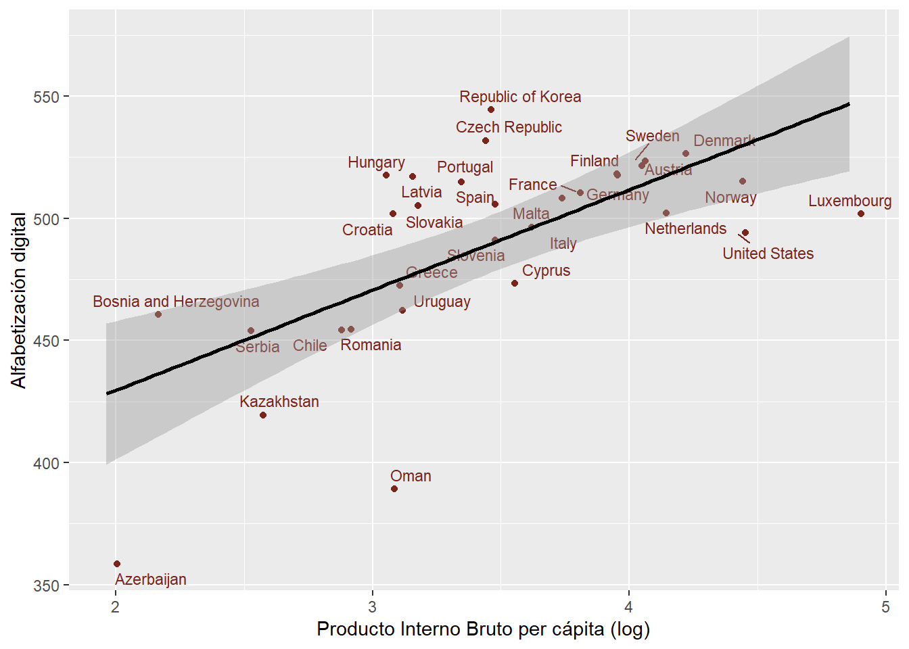
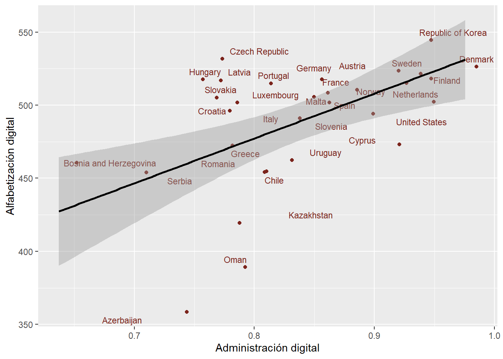
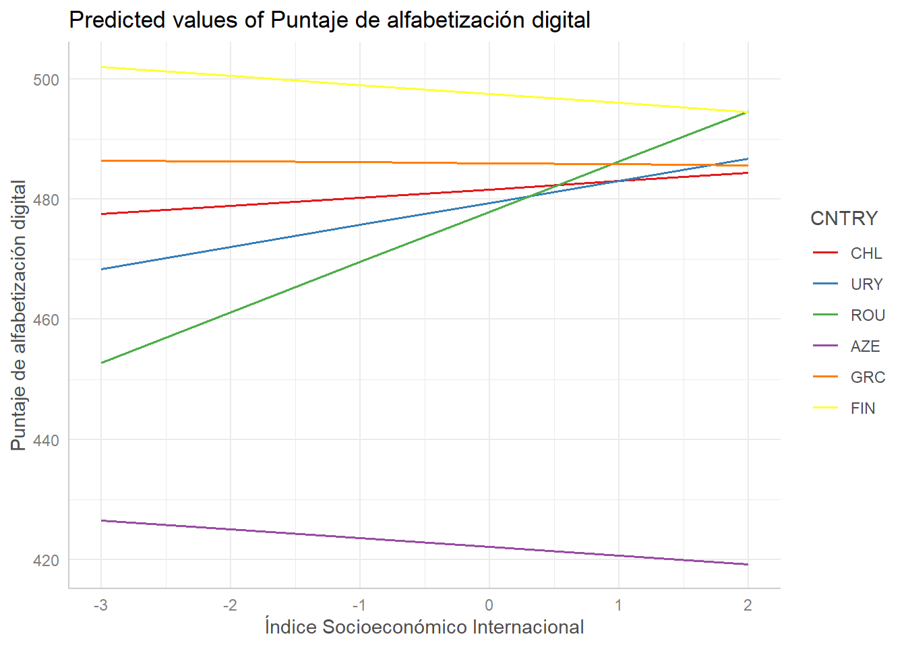
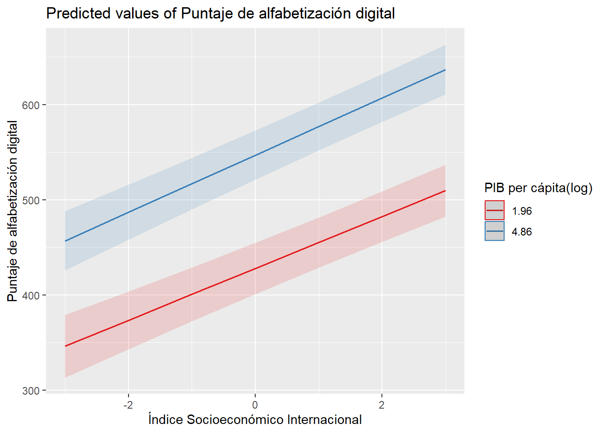
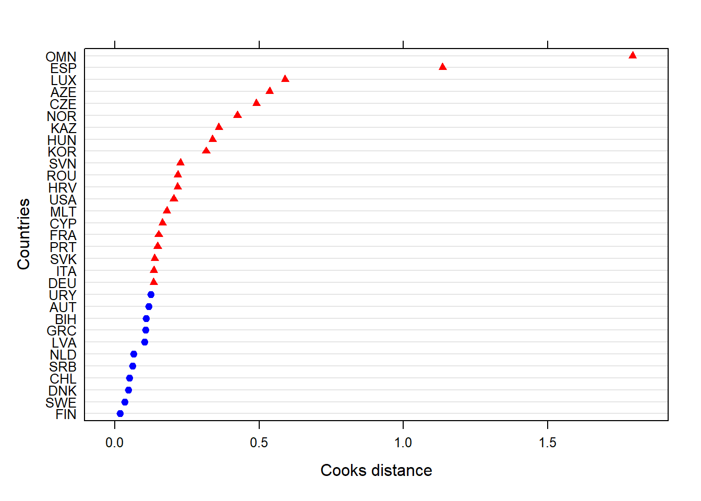

| var | label | n | NA.prc | mean | sd | range | |
|---|---|---|---|---|---|---|---|
| 1 | alf_digital | Puntaje de alfabetización digital | 104991 | 0 | 491.16 | 91.68 | 724.7 (45.41-770.12) |
| 2 | aprendizaje_escuela | Tareas relacionadas al aprendizaje online en la escuela | 104991 | 0 | 49.95 | 10.04 | 54.99 (20.76-75.75) |
| 3 | autoeffgen | Autoeficacia digital general del estudiante | 104991 | 0 | 50.07 | 9.93 | 51.5 (26.62-78.12) |
| 6 | sexo | Sexo de estudiante | 104991 | 0 | 0.50 | 0.50 | 1 (0-1) |
| 4 | expcompu | Experiencia con computador en años | 104991 | 0 | 2.50 | 1.27 | 4 (0-4) |
| 5 | iiseb | Índice Socioeconómico Internacional | 104991 | 0 | 0.06 | 0.99 | 4.46 (-2.54-1.91) |
1 Abstract
La creciente digitalización ha suscitado nuevas desigualdades en torno a la disponibilidad y el uso y conocimientos de las tecnologías digitales. Para estrechar estas brechas, la alfabetización digital se presenta no sólo como una solución, sino como una competencia fundamental para la vida en la sociedad actual. Los estudiantes conviven en entornos digitales cotidianamente, pero no todos poseen la misma masterización en habilidades digitales. Al respecto, las condiciones del país en que se encuentran los jóvenes juegan un rol clave, en donde estas condiciones estructurales pueden determinar la alfabetización digital. Esta investigación tiene como objetivo explorar las determinantes a nivel individual y a nivel país que inciden en la alfabetización digital de los estudiantes. Se utiliza la base de datos ICILS 2023 (N = 135615 en 35 países) aplicando modelamiento multinivel. Los resultados indican a nivel individual la relevancia del sexo y nivel socioeconómico del estudiante para determinar la alfabetización digital, mientras que en el nivel dos la riqueza del país es más importante que un gobierno digitalizado en la alfabetización digital de sus estudiantes.
2 Introducción
Durante las últimas décadas las nuevas tecnologías se han expandido a un ritmo exponencial y vertiginoso, lo cual ha suscitado diversas interrogantes en torno a su presencia en la sociedad y, sobre todo, a los usos que se les dan a ellas. Efectivamente, en la actualidad la mayoría de las interacciones sociales se ven mediadas por la digitalidad, la cual ha logrado inscribirse en la cultura popular de las nuevas generaciones, formando parte constitutiva de sus trayectorias (Buckingham 2008). En este contexto, la proliferación de las Tecnologías de Información y Comunicación juega un rol sumamente relevante para la sociedad en tanto han fomentado el mejoramiento en la calidad de vida humana, aportando en diversos campos como la salud, la educación, la banca, el transporte y la gobernanza digital (Pritika Reddy, Sharma, y Chandra 2020; Nand y Sharma 2019; Bibhya Nand Sharma et al. 2018; P. Reddy, Sharma, y Chandra 2017; Pojani y Stead 2015; Bibhya N. Sharma et al. 2015).
Estas nuevas tecnologías han irrumpido con fuerza en los procesos de enseñanza y aprendizaje de los establecimientos educacionales, viéndose la educación como el campo para abordar los desafíos que imponen estas transformaciones (Sunkel, Trucco, y Möller 2011). La implementación de las TIC en la educación ha generado expectativas al punto de considerarse como un catalizador para la reducción de las desigualdades (Claro 2010). Aun así, es sumamente importante que, además de que exista equidad respecto a la infraestructura tecnológica existente en las escuelas, también hay que preocuparse de las habilidades que poseen las personas para desenvolverse con las TIC.
El desarrollo de las tecnologías digitales también ha generado la emergencia de otras brechas. Este fenómeno ha tomado el nombre de brecha digital, cuyo significado corresponde a la distancia que se produce entre los individuos y sociedades que pueden acceder y participar de la era de la información y los que no los tienen (Dijk 2020). Uno de los problemas más perjudiciales de la brecha digital es que se piensa que su padecimiento implica la agudización de otras brechas, tales como la económica y la social (Camacho 2005). En la misma línea, se ha planteado el surgimiento de una segunda brecha digital, asociada a las habilidades necesarias para relacionarse y operar de manera adecuada las TIC (Claro 2010).
En este contexto, la alfabetización digital surge como una alternativa que posibilita hacer frente a las brechas digitales a través del desarrollo de habilidades necesarias para ser usuario de la información digital, tales como la aptitud para identificar la calidad de un contenido y/o la adaptabilidad a diversos contextos en el uso de TIC (Castells 2006; García-Ávila 2017). A pesar de ser un concepto cada vez más relevante, no existe una definición universal de la alfabetización digital, ni tampoco una pauta general de cómo medirla. Sobre aquello, el estudio International Computer and Information Literacy Study operacionaliza el concepto en alfabetización computacional y manejo de la información de tal manera que pueda ser medido, entendiéndolo como la capacidad individual para utilizar computadores con fines de investigación, creación y comunicación, con tal de participar de manera eficaz en el hogar, la escuela, el lugar de trabajo y la sociedad (Fraillon et al. 2013).
Es importante precisar que, aunque la alfabetización digital pueda concebirse como una opción para reducir la exclusión digital, debe comprenderse más allá de su carácter resolutivo y considerarse como una de las piedras angulares para el desarrollo humano actual en tanto dota de una capacidad agencial a los individuos al permitirles desplegarse activamente en los nuevos entornos que involucran la digitalidad, lo que consecuentemente los lleva a integrarse a la sociedad apropiadamente y no quedar marginados de la ciudadanía (Silvera 2005; Barroso y Cabero 2011; Cabero 2016).
Las brechas digitales poseen este carácter individual, en donde ciertos grupos gozan de los beneficios que proporcionan estas tecnologías, mientras otros son relegados a quedar fuera del mundo digital, pero esta lógica también observarse entre países, pues existen países que se encuentran mejor posicionados frente al malestar digital que otros (Silvera 2005). De hecho, existen diferencias sustantivas respecto al desarrollo e implementación de las TIC entre regiones. Los países desarrollados han logrado superar en cierta medida la primera brecha digital, mientras en Latinoamérica aún no se ha encontrado alguna resolución respecto a los problemas de acceso a las TIC (Claro 2010).
Generalmente, los países desarrollados tienden a tener mejores resultados en estudios comparativos internacionales que países subdesarrollados (OECD 2023; IEA 2021). Estas diferencias pueden explicarse por factores culturales, económicas y/o educativos particulares de cada país, lo que puede dar lugar a experiencias diferentes de los estudiantes dependiendo de su pertenencia. Señalar estas diferencias entre países constituye un paso importante para la evaluación de los sistemas educativos (Punter, Meelissen, y Glas 2017).
Existen estudios que han intentado aplicar un enfoque comparativo para dar cuenta de cómo varía la relevancia de los predictores dependiendo el país. En este marco, está el estudio de Gerick, Eickelmann, y Bos (2017), cuyo propósito fue evidenciar cuáles son los factores a nivel escuela que apoyan u obstaculizan el uso de TIC por parte de profesores y estudiantes, comparando entre Australia, Alemania, Noruega y República Checa; sus resultados indican que sólo en Alemania la alfabetización digital no implica necesariamente disponibilidad de infraestructura tecnológica. Por su parte, Aydin (2022) se centró en indagar en los determinantes de la alfabetización digital en alumnos, realizando un estudio que examinó las características de los profesores y los estudiantes mediante un análisis comparativo entre Finlandia y Corea.
Considerando la importancia de la pertenencia a un país respecto al desempeño académico, este trabajo pretende explorar en los factores que inciden en la alfabetización digital a través de un análisis comparado entre países, con tal de dilucidar cómo se comportan estos predictores dependiendo la región. Tomando en cuenta esto, se propone la siguiente pregunta de investigación: ¿De qué manera se relacionan los factores individuales y contextuales a nivel país en el logro de alfabetización digital de los estudiantes?
3 Factores asociados
3.1 Nivel individual
El género es factor fundamental al momento de estudiar la alfabetización digital, pues mediante dinámicas de estigmatización las mujeres han sido opacadas en el campo tecnológico, viéndose relegadas a ocupar una posición inferior en cuanto al dominio digital, pero la manera en que se comprenden estos resultados ha cambiado en el tiempo (Fairlie 2016). Mientras que estudios anteriores solían indicar que los niños tenían ventaja en cuanto a habilidades digitales, investigaciones más recientes revelan que las brechas de género se están reduciendo o incluso invirtiendo, y que en algunos contextos las niñas superan a los niños en las evaluaciones de alfabetización digital (Caponera, Annunziata, y Palmerio 2025; Heldt et al. 2020).
El nivel socioeconómico ha sido históricamente comprendido como un determinante en el logro de resultados de estudiantes (Cervini 2002; Chaparro Caso López, González Barbera, y Caso Niebla 2016). Hay posturas que defienden la educación como el principal motor de generación de oportunidades y movilidad social (Collins 1989), pero también la contraparte que señala las escuelas como meros sistemas de reproducción social que perpetúan las desigualdades de base de los jóvenes (Bourdieu y Passeron 2009). El contexto digital no es la excepción, pues investigaciones empíricas han demostrado la diferencia en puntajes de alfabetización digital cuando el contexto socioeconómico del estudiante es tomado en cuenta, en donde aquellos con mejores condiciones tienen desempeños más destacados que sus pares (Heldt et al. 2020; Aesaert y van Braak 2018).
La autoeficacia digital es otro concepto ampliamente reconocido como un indicador clave de la alfabetización digital de los estudiantes, entendido como la autopercepción del individuo sobre su propio desempeño en alguna actividad específica (Bandura 1982). Los estudiantes que creen en su capacidad para utilizar eficazmente las tecnologías digitales son más propensos a utilizar herramientas digitales, explorar nuevas aplicaciones y persistir en la superación de retos (Tsai y Tsai 2010). Una mayor autoeficacia digital se asocia con una mayor confianza en la navegación por entornos en línea, lo que se traduce en una mejora de las habilidades digitales y los resultados del aprendizaje (Hatlevik, Gumundsdóttir, y Loi 2015). Por lo tanto, la autoeficacia digital se presenta como un mecanismo importante a través del cual los entornos educativos pueden ayudar a salvar las brechas de habilidades digitales.
3.2 Nivel país
Las diferencias entre países en materia de alfabetización digital están determinadas por una serie de factores a nivel nacional, especialmente por indicadores socioeconómicos tales como el producto interno bruto (PIB) per cápita. Los países con PIB más elevado tienden a ofrecer un mejor acceso a los recursos digitales, tanto en el hogar como en las escuelas, lo que facilita la adquisición de competencias digitales entre los estudiantes (Gerick, Eickelmann, y Bos 2017). Además, la prosperidad económica permite una mayor inversión en tecnología educativa, formación del profesorado y entornos de aprendizaje digital, lo que contribuye a obtener puntuaciones medias más altas en alfabetización digital (Scherer et al. 2023).
El estado y los gobiernos han sufrido una reconfiguración de su organización gracias a los procesos de digitalización. Los estados de bienestar han debido reinventar su funcionamiento a propósito de la emergencia de las plataformas online, lo que ha ayudado a promover nuevas oportunidades laborales, así como se han ampliado las modalidades para realizar trámites (Busemeyer et al. 2022). Al respecto, los países con una infraestructura digital avanzada ofrecen oportunidades más equitativas para que los estudiantes desarrollen competencias digitales, mientras que aquellos con una infraestructura limitada pueden agravar las desigualdades existentes (Fraillon et al. 2020).
3.3 Interacción entre niveles
Las condiciones socioeconómicas de un país pueden moderar la relación entre el puntaje de alfabetización digital y el nivel socioeconómico de los estudiantes. Los países más ricos, sobre todo en Europa, suelen ser también más igualitarios en términos económicos y, al mismo tiempo, tener puntajes de alfabetización digital sobre el promedio (Fraillon 2024). En esta lógica, se esperaría que en los países económicamente desventajados, las disparidades en el puntaje de alfabetización digital sean exacerbadas por el nivel socioeconómico de los estudiantes.
3.4 Objetivo e hipótesis
Objetivo general: Analizar los principales determinantes individuales y contextuales de la alfabetización digital en estudiantes al año 2023 y cómo se diferencian entre países
Hipótesis de nivel 1
\(H_1\): Las mujeres tendrán mayor puntaje de alfabetización digital que los hombres
\(H_2\): El nivel socioeconómico se asociará positivamente con la alfabetización digital
\(H_3\): A mayor nivel de autoeficacia digital del estudiante, mayor será su puntaje en alfabetización digital
Hipótesis de nivel 2
\(H_4\): Pertenecer a un país con mayor índice de administración digital tiene un efecto positivo sobre la alfabetización digital de los estudiantes
\(H_5\): A mayor PIB per cápita, los estudiantes tendrán un puntaje más alto de alfabetización digital
Hipótesis de interacción
\(H_6\) El efecto positivo del nivel socioeconómico sobre la alfabetización digital es más intenso en países con menor PIB per cápita
4 Datos, variables y métodos
Para dar una respuesta plausible a la pregunta de investigación, el presente estudio se sirve de la base de datos del último ciclo del International Computer and Information Literacy Study (ICILS) llevado a cabo el año 2023, aplicada en 35 países (N = 135615). Esta base, además de aplicar encuestas de caracterización, realiza una prueba práctica estandarizada para cumplir con la medición de la alfabetización digital. En este caso, se van a utilizar las bases de datos de estudiantes, la cual, después de haber sido procesada tiene N = 104991 anidados en 31 países. El diseño muestral es complejo por conglomerados multietápicos. Por último, es pertinente mencionar que la unidad de análisis son los estudiantes correspondientes al octavo año de escolarización.
A modo auxiliar, para incluir datos a nivel país se utilizaron las bases de datos Quality of Government y la del Banco Mundial.
4.1 Variables
Variable dependiente
Alfabetización digital: La variable dependiente de este estudio es el logro de alfabetización digital medido a través de una prueba compuesta por cuatro módulos, de los cuales los estudiantes sólo respondieron dos seleccionados de manera aleatoria. La variable puede tomar 5 valores plausibles a partir del puntaje logrado por los estudiantes: Bajo del nivel 1 (menos de 407 puntos), Nivel 1 (desde 407 hasta 491 puntos), Nivel 2 (desde 492 hasta 576 puntos), Nivel 3 (desde 557 hasta 661 puntos) y el Nivel 4 (sobre 661 puntos).
Variables nivel 1
Sexo: Esta variable puede tener dos valores: 0 para hombre y 1 para mujer.
Autoeficacia: Para medir la autoeficacia, se emplearon dos dimensiones: autoeficacia relacionada al uso general de aplicaciones y autoeficacia relacionada al uso especializado de aplicaciones. Cada una de ellas es un índice construido a partir de distintos enunciados relacionados a la autopercepción del estudiante respecto a qué tan bien puede desempeñar una labor usando TIC. Ambas autoeficacias poseen cuatro categorías de respuesta: (1) Muy bien; (2) Moderadamente bien; (3) Nunca he hecho esto, pero podría descubrir cómo hacerlo; (4) No creo que pueda hacer esto.
Índice socioeconómico: Mide el nivel socioecómico del estudiante a partir del estatus ocupacional más alto de los padres, el nivel educativo más alto de los padres y el número de libros en casa.
Experiencia con computador en años (expcompu): Mide la cantidad de años de experiencia que posee un estudiante con computador a través de cinco categorías de respuesta. (0) Nunca o menos de un año; (1) Al menos un año pero menos que tres; (2) Al menos tres años pero menos que cinco; (3) Al menos cinco años pero menos que siete; (4) Siete años o más.
Tareas relacionadas al aprendizaje online en la escuela: Es una variable construida a partir de una serie de indicadores que refieren a si el estudiante realizó la respectiva actividad en su escuela.
Cabe precisar que tanto Experiencia con computador en años como Tareas relacionadas al aprendizaje online en la escuela serán utilizadas como variables de control.
Variables nivel 2
Gobernanza digital: Es una media ponderada de puntajes normalizados extraído de Quality of Government, el cual está construido a partir de un índice de servicios online, un índice del estado de desarrollo de infraestructura en telecomunicaciones y un índice de capital humano. Sus valores van del 0 al 1, donde los valores más cercanos al 1 significan mayor capacidad de gobernanza digital.
PIB per cápita: Es un indicador que representa el valor promedio de bienes y servicios producidos por cada persona en un país o territorio durante un período determinado. Se calcula dividiendo el PIB total de un país por la cantidad total de habitantes. Está expresado en dólares.
Logaritmo del PIB: Es la misma variable de PIB per cápita pero calculando su logaritmo, pues esto permite que se ajusten los pesos del valor para cada país, facilitando su interpretación.
| var | label | n | NA.prc | mean | sd | range |
|---|---|---|---|---|---|---|
| adm_digital | Administración digital | 31 | 0 | 0.84 | 0.08 | 0.34 (0.64-0.98) |
| logpib | Logaritmo de PIB | 31 | 0 | 3.45 | 0.67 | 2.89 (1.96-4.86) |
| pib | Producto Interno Bruto per cápita | 31 | 0 | 38.88 | 26.65 | 121.55 (7.13-128.68) |
4.2 Métodos
Para esta investigación se pretende emplear modelos multinivel para realizar un análisis comparado entre los distintos países que conforman el estudio. Una de las razones por las que se opta este método es debido a la capacidad de estudiar estructuras de datos jerárquicos de la población (Hox 2017). De esta manera, los modelos multinivel permiten complejizar los análisis en tanto pueden ayudar a comprender relaciones entre variables de tipo individual con variables de tipo contextual. Esta técnica de análisis generalmente se utiliza para observar datos anidados, por lo cual se estima ideal para el desarrollo de este trabajo en tanto se estudiarán datos de estudiantes que se hallan dentro de países.
Los modelos serán reportados en el siguiente orden:
1) Modelo nulo
\[\text{alf\_digital}_{ij} = \gamma_{00} + \mu_{0j} + r_{ij}\] 2) Modelo con predictores individuales
\[ \begin{multline} \text{alf\_digital}_{ij} = \gamma_{00} + \gamma_{10} \text{sexo}_{ij} + \gamma_{20} \text{iiseb}_{ij} + \gamma_{30} \text{expcompu}_{ij} + \gamma_{40} \text{autoeffgen}_{ij} \\ + \gamma_{50} \text{aprendizaje\_escuela}_{ij} + \mu_{0j} + r_{ij} \end{multline} \] 3) Modelo con predictores grupales
\[\text{alf\_digital}_{ij} = \gamma_{01} \text{adm\_digital}_{ij} + \gamma_{02} \text{logpib}_{ij} + \mu_{0j} + r_{ij}\] 4) Modelo con predictores individuales y grupales
\[ \begin{multline} \text{alf\_digital}_{ij} = \gamma_{00} + \gamma_{10} \text{sexo}_{ij} + \gamma_{20} \text{iiseb}_{ij} + \gamma_{30} \text{expcompu}_{ij} + \gamma_{40} \text{autoeffgen}_{ij} \\ + \gamma_{50} \text{aprendizaje\_escuela}_{ij} + \gamma_{01} \text{adm\_digital}_{ij} + \gamma_{02} \text{logpib}_{ij} + \mu_{0j} + r_{ij} \end{multline} \]
5) Modelo con pendiente aleatoria
\[\text{alf\_digital}_{ij} = \gamma_{00} + \gamma_{20} \text{iiseb}_{ij} + \gamma_{02} \text{logpib}_{ij} + \mu_{1j}\text{iiseb}_{ij} + \mu_{0j} + r_{ij}\]
6) Interacción entre niveles
\[\text{alf\_digital}_{ij} = \gamma_{00} + \gamma_{20} \text{iiseb}_{ij} + \gamma_{02} \text{logpib}_{ij} + \gamma_{11}\text{iiseb}_{ij} \text{logpib}_{ij} + \mu_{1j}\text{iiseb}_{ij} + \mu_{0j} + r_{ij}\]
5 Resultados
5.1 Descriptivos
Código
[1] 0.6596024Código
sjPlot::plot_scatter(scatter, logpib, alf_digital,
dot.labels = to_label(scatter$CNTRY),
fit.line = "lm",
show.ci = TRUE,
axis.titles = c("Producto Interno Bruto per cápita (log)",
"Alfabetización digital"),
colors = "#7b241c"
)
En Figura 1 se observa la correlación entre alfabetización digital y el logaritmo de PIB per cápita. La correlación entre ambas variables es positiva y con un efecto fuerte. En general, los países se ven dipersos conforme a la recta, lo que significa que a mayor PIB per cápita, mayor alfabetización digital. Aun así, es interesante observar casos como los de Korea y República Checa, que son los dos países que tienen el promedio de alfabetización digital más alto pero no son aquellos con el mayor PIB per cápita.
Código
cor(scatter$alf_digital, scatter$adm_digital)[1] 0.5583879Código
sjPlot::plot_scatter(scatter, adm_digital, alf_digital,
dot.labels = to_label(scatter$CNTRY),
fit.line = "lm",
show.ci = TRUE,
axis.titles = c("Administración digital",
"Alfabetización digital"),
colors = "#7b241c"
)
Figura 2 Representa la correlación entre alfabetización digital y administración digital, la cual tiene un efecto positivo y moderado. Se puede apreciar que la mayoría de los países se concentran entre el 0.8 y 0.9, lo cual es bastante alto tomando en cuenta que el índice va desde 0 a 1. Llama la atención Dinamarca que, si bien su puntaje de administración digital es 0.98, siendo el país que puntúa más alto, en el gráfico se muestra sobrepasando el valor 1. En segundo lugar está Korea, lo cual es consistente con el resultado de la correlación.
5.2 Modelos
El reporte de los modelos será presentado en el mismo orden de la formalización de las ecuaciones. En orden de precisar las estimaciones de los modelos, las variables de nivel individual fueron centradas al grupo (CMC).
| Modelo nulo | Variables nivel 1 | Administración digital | Variables nivel 2 | Modelo completo | Pendiente aleatoria | Interacción entre niveles | |
|---|---|---|---|---|---|---|---|
| Predictors | Estimates | Estimates | Estimates | Estimates | Estimates | Estimates | Estimates |
| (Intercept) | 489.12 *** (7.52) |
489.12 *** (7.52) |
231.76 ** (71.29) |
310.77 *** (72.37) |
310.78 *** (72.36) |
342.77 *** (30.02) |
347.44 *** (29.54) |
| Sexo de estudiante | 15.18 *** (0.46) |
15.18 *** (0.46) |
|||||
| Índice Socioeconómico Internacional |
26.06 *** (0.24) |
26.06 *** (0.24) |
28.62 *** (0.96) |
25.39 *** (4.99) |
|||
| Experiencia con computador en años |
10.14 *** (0.19) |
10.14 *** (0.19) |
|||||
| Autoeficacia digital general del estudiante |
0.33 *** (0.03) |
0.33 *** (0.03) |
|||||
| Tareas relacionadas al aprendizaje online en la escuela |
0.06 * (0.02) |
0.06 * (0.02) |
|||||
| Administración digital | 306.91 *** (84.68) |
68.20 (121.71) |
68.18 (121.71) |
||||
| PIB per cápita(log) | 35.12 * (13.79) |
35.12 * (13.79) |
42.45 *** (8.53) |
41.07 *** (8.41) |
|||
| iiseb.cmc:logpib | 0.95 (1.42) |
||||||
| Random Effects | |||||||
| σ2 | 6592.96 | 5654.32 | 6592.96 | 6592.96 | 5654.32 | 5854.25 | 5854.24 |
| τ00 | 1752.50 CNTRY | 1752.77 CNTRY | 1247.12 CNTRY | 1048.34 CNTRY | 1048.60 CNTRY | 1039.79 CNTRY | 957.86 CNTRY |
| τ11 | 26.12 CNTRY.iiseb | 24.87 CNTRY.iiseb.cmc | |||||
| ρ01 | -0.24 CNTRY | -0.23 CNTRY | |||||
| ICC | 0.21 | 0.24 | 0.16 | 0.14 | 0.16 | 0.15 | 0.14 |
| N | 31 CNTRY | 31 CNTRY | 31 CNTRY | 31 CNTRY | 31 CNTRY | 31 CNTRY | 31 CNTRY |
| Observations | 104991 | 104991 | 104991 | 104991 | 104991 | 104991 | 104991 |
| Marginal R2 / Conditional R2 | 0.000 / 0.210 | 0.112 / 0.322 | 0.050 / 0.201 | 0.073 / 0.201 | 0.187 / 0.314 | 0.171 / 0.296 | 0.168 / 0.287 |
| * p<0.05 ** p<0.01 *** p<0.001 | |||||||
Modelo nulo
El primer modelo estimado fue el modelo nulo, puesto que permite calcular el ICC y determinar si es pertinente usar modelamiento multinivel en el análisis. A partir de \(\tau_{00}\) / \(\tau_{00}\) + \(\sigma^2\) el ICC dio 0.21, lo que significa que el 21% de la varianza de la alfabetización digital se debe a la pertenencia a países. Este resultado es significativo, por lo que se justifica la aplicación de modelos multinivel para indagar en las diferencias de alfabetización digital de estudiantes anidados en países.
Modelo con predictores individuales
El segundo modelo de Tabla 3 es el que contiene los predictores de nivel uno. Este modelo sirve para contrastar las hipótesis \(H_1\), \(H_2\) y \(H_3\) que serán discutidas más adelante.
Todas las variables son estadísticamente significativas, por lo que de momento no se puede descartar ninguna hipótesis, pues todas aportan en la predicción de la alfabetización digital.
Respecto a los coeficientes, considerando que todos los estudiantes tienen la misma experiencia en computadores en años, y todos realizan las mismas tareas con TIC en la escuela, las mujeres puntúan en promedio 15.18 más alto que los hombres. Tener un punto adicional en nivel socioeconómico aumenta el puntaje de alfabetización digital en 26.06. Por último, cada unidad adicional en autoeficacia digital aumenta un 0.33 la alfabetización digital de los estudiantes.
Se puede apreciar que todos los efectos son positivos, y tanto sexo como nivel socioeconómico tienen efectos bastante grandes en comparación con el de autoeficacia digital.
En cuanto a los efectos aleatorios, se observa que, en comparación al modelo nulo, \(\sigma^2\) pasa de 6592.96 a 5654.32, por lo que se puede asumir que el modelo con predictores individuales permite capturar parte de la variabilidad existente dentro de los países.
Modelo con predictores grupales
El tercer y cuarto modelo expuesto en Tabla 3 contienen los predictores grupales. El primero de estos dos modelos solamente considera la variable de administración digital y no fue especificado en las ecuaciones previas, pero esto se debe a que fue estimado solamente para efectos ilustrativos, pues ocurre algo interesante entre las variables a nivel país.
Al ingresar administración digital a un modelo, se ve que es estadísticamente significativa con un efecto muy grande, lo cual señala que, un país con la mejor calidad en administración digital tendría 306.91 puntos adicionales en alfabetización digital en comparación a un país con la más precaria administración digital.
Sin embargo, al ingresar PIB per cápita (expresado en su lograritmo) al modelo, la administración digital pierde toda su significancia, y su efecto disminuye considerablemente a 68.20. En paralelo, el PIB es significativo pero moderadamente, donde por cada mil dólares adicionales, la alfabetización digital aumenta en 35.12. Este resultado llama bastante la atención, pero se puede comprender por la parcialización de las variables al momento de estimarse la regresión, entendiéndose que el efecto del PIB per cápita predomina por sobre el de la administración digital al predecir la alfabetización digital.
En relación a los efectos aleatorios, se aprecia una disminución del \(\tau_{00}\) a 1048.34, cuyo resultado indica que parte de las diferencias entre países se explica por el PIB per cápita.
Modelo completo
Este modelo incluye tanto los predictores individuales como los grupales, por lo que se pueden contrastar las cinco hipótesis planteadas anteriormente solamente analizando este modelo.
Se observa que todos los coeficientes mantienen sus valores al igual que sus efectos significativos.
Algo llamativo es el incremento, pero muy leve, de \(\tau_{00}\) a 1048.60.
Modelo pendiente aleatoria
Código
reg_1 <- lmer(alf_digital ~ 1 + iiseb.cmc + logpib + (1 | CNTRY), data = icils_c)
anova(reg_1, reg_random)Data: icils_c
Models:
reg_1: alf_digital ~ 1 + iiseb.cmc + logpib + (1 | CNTRY)
reg_random: alf_digital ~ 1 + iiseb.cmc + logpib + (1 + iiseb | CNTRY)
npar AIC BIC logLik deviance Chisq Df
reg_1 5 1209312 1209360 -604651 1209302
reg_random 7 1209026 1209093 -604506 1209012 289.84 2
Pr(>Chisq)
reg_1
reg_random < 0.00000000000000022 ***
---
Signif. codes: 0 '***' 0.001 '**' 0.01 '*' 0.05 '.' 0.1 ' ' 1El modelo con pendiente aleatoria para nivel socioeconómico pretende averiguar si esta variable varía entre países. Calculando un test de devianza entre el modelo con pendiente fija y aleatoria, resultó que el modelo con pendiente aleatoria ajusta significativamente mejor que el otro, presentando un \(\chi^2\) = 289.84, por lo que se comprueba que el efecto del nivel socioeconómico en la alfabetización digital no es el mismo entre países.
\(\tau_{11}\) = 26.12 respalda que el efecto del nivel socioeconómico no es el mismo para todos los países. Por su parte, \(\rho_{01}\) = -0.24 indica que, en países con menor alfabetización digital, el efecto del nivel socioeconómico es más fuerte.
Código

Este gráfico corresponde a la aleatorización de las pendientes de nivel socioeconómico. En primer lugar, se observa que las pendientes difieren unas entre otras, por lo que añadir efectos aleatorios es una decisión acertada. Los dos países latinoamericanos que participan en el estudio, Uruguay y Chile, tienen una pendiente positiva bastante similar. Por otro lado, la pendiente de Rumanía es bastante alta, lo que significa que el efecto de nivel socioeconómico sobre la alfabetización digital en ese país es fuerte.
Modelo interacción entre niveles

A pesar de mantenerse con coeficientes significativos, al momento de graficar la interacción, en Figura 3 las dos pendientes no se intersectan, lo que quiere decir que no se ha encontrado una interacción entre nivel socioeconómico y PIB per cápita para predecir la alfabetización digital.
5.3 Ajuste
Respecto al ajuste de los modelos, se puede ver que, en el modelo de variables individuales, el \(r^2\) condicional es mayor al \(r^2\) marginal (0.332 > 0.112), lo que quiere decir que el modelo con efectos aleatorios posee una mayor capacidad explicativa que el modelo con efectos fijos. El modelo con solamente variables contextuales también tiene un mejor ajuste en el \(r^2\) condicional, respaldando la estimación de un modelo con efectos aleatorios. El resultado más llamativo es el ajuste del modelo completo, en donde el \(r^2\) condicional, si bien es mejor que su \(r^2\) marginal (0.314 > 0.187), es más bajo que el \(r^2\) condicional del modelo con variables individuales. No obstante, esto no quiere decir necesariamente que el modelo con variables nivel 1 tenga mayor capacidad explicativa que el modelo completo, pero habría que entrar a escarbar de manera minuciosa para comprender a cabalidad la razón de este resultado.
5.4 Casos influyentes
Para analizar la existencia de casos influyentes, se estimó la distancia de Cook a partir del modelo completo, de la cual resultó un cutoff de 0.13, entendiéndose que todos los países sobre ese umbral podrían ser casos que están modificando sustancialmente las estimaciones de los modelos.
[,1]
FIN 0.01963481
SWE 0.03450031
DNK 0.04727367
CHL 0.05151190
SRB 0.06139562
NLD 0.06637431
LVA 0.10406601
GRC 0.10762657
BIH 0.10825537
AUT 0.11733263
URY 0.12515838
DEU 0.13505330
ITA 0.13573523
SVK 0.13844328
PRT 0.14873691
FRA 0.15224779
CYP 0.16548448
MLT 0.18043342
USA 0.20465886
HRV 0.21766717
ROU 0.21890219
SVN 0.22732826
KOR 0.31667474
HUN 0.33872546
KAZ 0.36080784
NOR 0.42509142
CZE 0.49036851
AZE 0.53666770
LUX 0.58994701
ESP 1.13527869
OMN 1.79270343[1] 0.1290323
Figura 4 grafica los países que son considerados como casos influyentes con rojo, mientras que los azules significa que no están interfiriendo en las estimaciones. Como se observa, más de la mitad de los países están por sobre 0.13, lo cual podría ser peligroso para el análisis pues, en algún caso, se podría decidir eliminar todos los países en rojo. No obstante, calculando la significancia de los casos, ninguno resultó como significante, por lo que se puede interpretar que no se puede asumir que los países en rojo sean casos influyentes.
6 Discusión
En relación a las hipótesis de carácter individual, hay evidencia a favor de \(H_1\), señalando que las mujeres tienen puntajes más altos en alfabetización digital en comparación a sus contrapartes. Este resultado se condice con la literatura actual, cuyo argumento central radica en que las mujeres se hallan a la vanguardia del logro académico, revirtiendo un panorama históricamente a favor de su contraparte masculina. Este hallazgo hay que considerarlo pero con suma precaucion, pues no debe interpretarse como el punto culmine de las desigualdades de género. En suma, no significa que el estigma sobre las mujeres en este campo se haya desmantelado, pero al menos se está avanzando en algunas materias en orden de equilibrar esta balanza social en lo que respecta al género
De la misma manera, el nivel socioeconómico (\(H_2\)) es significativa, por tanto, tener un alto nivel socioeconómico se relaciona a un alto puntaje en alfabetización digital. Este efecto se entronca en la narrativa general de cómo el desempeño académico se ve predicho por los antecedentes socioeconomicos del estudiante. Esto resulta desalentador, pues se esperaría que con las condiciones actuales (disponibilidad de tecnologías de alto rendimiento) este efecto se mitigara, pero probablemente las escuelas aun no son o, en el peor de los casos, no serán capaces de ofrecer alternativas para sortear las desigualdades economicas de base de los estudiantes. Este resultado respalda la escuela en una lógica reproduccionista, pues el nivel socioeconómico es lo que regirá los resultados, reduciendo el margen de la agencia y/o talento de los estudiantes más desfavorecidos económicamente hablando.
La autoeficacia digital (\(H_3\)) no puede ser rechazada pues es significativa y mantiene la direccionalidad sugerida en las hipótesis, por lo tanto, tener alta autoeficacia digital se relaciona a un mayor puntaje en alfabetización digital. Es sumamente interesante el resultado de esta hipótesis, pues releva la consideración de factores psicosociales en el logro académico en el contexto digital. Si bien es importante preparar a los estudiantes para que manejen los conocimientos prácticos y puedan tener un desempeño destacable, la valorización hacia uno mismo y sus capacidades juega un papel igual de notable. Por ello, hay que fomentar tanto el perfeccionamiento de las habilidades como el forjamiento de un autoestima sólido en los estudiantes, para que, de esta forma, puedan explotar sus capacidades sin restringirse.
En cuanto a las hipótesis de nivel país, la administración digital (\(H_4\)) no tiene sustento empírico, pues no es significativo, por lo que se puede deducir que el hecho de que un país tenga alta o baja administración digital, no influirá en la alfabetización digital de sus estudiantes.
El PIB per cápita (\(H_5\)) muestra que es significativo y posee un efecto positivo en la alfabetización digital, por lo que países con mayor riqueza tenderán a resultados más altos en este campo.
A partir de las dos últimas hipótesis se puede deducir que, la masterización de habilidades digitales, más que deberse a un país con infraestructura tecnológica eficiente, se atribuye a las condiciones que permite generar la riqueza del país, es decir, la capacidad de una administración digital a nivel gubernamental se subsume al entramado que un país puede configurar a partir de las condiciones económicas propias. En este sentido, la gobernanza digital es contenida en este entramado, el cual podría además abordar elementos de la esfera social, política y cultural, pero hace falta evidencia para entregar un diagnóstico más claro.
7 Conclusiones
Esta investigación tenía como objetivo analizar los factores individuales y contextuales a nivel país de la alfabetización digital en estudiantes. Respondiendo a la pregunta planteada al inicio, dentro de los hallazgos más importantes se encuentra la evidencia empírica de que sexo y nivel socioeconómico a nivel individual determinan la alfabetización digital de los estudiantes. A partir de la pendiente aleatoria, se pudo deducir que el efecto de nivel socioeconómico es distinto dependiendo del país, lo que también justifica de gran manera la utilización de modelamiento multinivel. El hallazgo más interesante fue la parcialización de administración digital y PIB per cápita, en donde el PIB terminó restándole toda la significancia previa que tenía la gobernanza digital. Este hallazgo permitió concluir que la riqueza de un país es lo que determina las habilidades y conocimientos digitales, independientemente de qué tanta infraestructura digital posea el país en términos de administración. Asimismo, estos resultados abrieron otras interrogantes como ¿qué determina el PIB para haber mitigado todo el efecto de administración digital? Sería interesante seguir trabajando en esta línea, con tal de profundizar en la comprensión de los factores a nivel país que influyen en la alfabetización digital de los estudiantes.
Para cerrar, se señalan algunas limitantes del estudio, como el hecho de que se habla educación pero no se consideran las escuelas como un nivel dentro del análisis, por lo que se pierde la posibilidad de capturar otras variables y efectos que serían útiles a considerar. Por otra parte, fue imposible encontrar variables de nivel 2 para todos los países debido a la naturaleza de ellos (como por ejemplo, la Alemania Westfalia-Norte).
8 Anexo
Significancia de la distancia de Cook
Código
sigtest(cases, test=-1.96)$Intercept
Altered.Teststat Altered.Sig Changed.Sig
AUT 4.231736 FALSE FALSE
AZE 5.156549 FALSE FALSE
BIH 3.272174 FALSE FALSE
CHL 4.200612 FALSE FALSE
CYP 4.190173 FALSE FALSE
CZE 4.204810 FALSE FALSE
DEU 4.194473 FALSE FALSE
DNK 4.005130 FALSE FALSE
ESP 4.240134 FALSE FALSE
FIN 4.104059 FALSE FALSE
FRA 4.225750 FALSE FALSE
GRC 4.213237 FALSE FALSE
HRV 4.067122 FALSE FALSE
HUN 4.068454 FALSE FALSE
ITA 4.190694 FALSE FALSE
KAZ 4.090071 FALSE FALSE
KOR 4.707412 FALSE FALSE
LUX 4.635771 FALSE FALSE
LVA 4.098486 FALSE FALSE
MLT 4.222530 FALSE FALSE
NLD 4.116181 FALSE FALSE
NOR 4.218838 FALSE FALSE
OMN 5.269889 FALSE FALSE
PRT 4.258271 FALSE FALSE
ROU 4.212489 FALSE FALSE
SRB 4.144984 FALSE FALSE
SVK 4.074435 FALSE FALSE
SVN 4.214745 FALSE FALSE
SWE 4.173519 FALSE FALSE
URY 4.178537 FALSE FALSE
USA 4.143111 FALSE FALSE
$sexo.cmc
Altered.Teststat Altered.Sig Changed.Sig
AUT 32.21384 FALSE FALSE
AZE 32.58105 FALSE FALSE
BIH 32.80203 FALSE FALSE
CHL 32.70053 FALSE FALSE
CYP 31.94346 FALSE FALSE
CZE 32.70193 FALSE FALSE
DEU 32.62394 FALSE FALSE
DNK 31.71471 FALSE FALSE
ESP 31.09928 FALSE FALSE
FIN 32.02916 FALSE FALSE
FRA 32.48079 FALSE FALSE
GRC 32.45532 FALSE FALSE
HRV 31.54017 FALSE FALSE
HUN 32.52033 FALSE FALSE
ITA 32.04837 FALSE FALSE
KAZ 32.85256 FALSE FALSE
KOR 31.21206 FALSE FALSE
LUX 32.15443 FALSE FALSE
LVA 31.93554 FALSE FALSE
MLT 31.78534 FALSE FALSE
NLD 32.44537 FALSE FALSE
NOR 31.76511 FALSE FALSE
OMN 28.75933 FALSE FALSE
PRT 32.56574 FALSE FALSE
ROU 32.52841 FALSE FALSE
SRB 32.84144 FALSE FALSE
SVK 32.53179 FALSE FALSE
SVN 31.56977 FALSE FALSE
SWE 32.56371 FALSE FALSE
URY 32.65665 FALSE FALSE
USA 32.45119 FALSE FALSE
$iiseb.cmc
Altered.Teststat Altered.Sig Changed.Sig
AUT 104.9540 FALSE FALSE
AZE 106.7514 FALSE FALSE
BIH 106.5456 FALSE FALSE
CHL 106.3455 FALSE FALSE
CYP 105.7886 FALSE FALSE
CZE 102.1889 FALSE FALSE
DEU 104.2332 FALSE FALSE
DNK 105.5346 FALSE FALSE
ESP 102.2034 FALSE FALSE
FIN 105.4622 FALSE FALSE
FRA 105.0010 FALSE FALSE
GRC 105.7203 FALSE FALSE
HRV 107.0622 FALSE FALSE
HUN 103.8258 FALSE FALSE
ITA 105.9331 FALSE FALSE
KAZ 106.6578 FALSE FALSE
KOR 106.8652 FALSE FALSE
LUX 103.2282 FALSE FALSE
LVA 106.0815 FALSE FALSE
MLT 106.2724 FALSE FALSE
NLD 106.3195 FALSE FALSE
NOR 105.7844 FALSE FALSE
OMN 106.7248 FALSE FALSE
PRT 105.2616 FALSE FALSE
ROU 104.9310 FALSE FALSE
SRB 105.6749 FALSE FALSE
SVK 104.6154 FALSE FALSE
SVN 105.6455 FALSE FALSE
SWE 105.5386 FALSE FALSE
URY 105.5316 FALSE FALSE
USA 105.9473 FALSE FALSE
$expcompu.cmc
Altered.Teststat Altered.Sig Changed.Sig
AUT 52.04034 FALSE FALSE
AZE 51.07102 FALSE FALSE
BIH 52.33819 FALSE FALSE
CHL 51.64842 FALSE FALSE
CYP 51.97414 FALSE FALSE
CZE 51.06682 FALSE FALSE
DEU 52.34364 FALSE FALSE
DNK 52.10236 FALSE FALSE
ESP 50.46823 FALSE FALSE
FIN 51.50577 FALSE FALSE
FRA 52.67793 FALSE FALSE
GRC 51.61012 FALSE FALSE
HRV 52.07889 FALSE FALSE
HUN 52.15815 FALSE FALSE
ITA 51.51615 FALSE FALSE
KAZ 50.27422 FALSE FALSE
KOR 51.72030 FALSE FALSE
LUX 51.75541 FALSE FALSE
LVA 52.07288 FALSE FALSE
MLT 52.10464 FALSE FALSE
NLD 52.68012 FALSE FALSE
NOR 52.15685 FALSE FALSE
OMN 50.93032 FALSE FALSE
PRT 51.44716 FALSE FALSE
ROU 51.46438 FALSE FALSE
SRB 51.82593 FALSE FALSE
SVK 51.64439 FALSE FALSE
SVN 52.81885 FALSE FALSE
SWE 52.06758 FALSE FALSE
URY 51.54758 FALSE FALSE
USA 52.05041 FALSE FALSE
$autoeffgen.cmc
Altered.Teststat Altered.Sig Changed.Sig
AUT 13.45862 FALSE FALSE
AZE 12.52682 FALSE FALSE
BIH 12.59225 FALSE FALSE
CHL 13.03329 FALSE FALSE
CYP 12.57824 FALSE FALSE
CZE 11.59669 FALSE FALSE
DEU 12.69788 FALSE FALSE
DNK 12.23553 FALSE FALSE
ESP 11.71404 FALSE FALSE
FIN 12.40318 FALSE FALSE
FRA 12.58198 FALSE FALSE
GRC 12.51452 FALSE FALSE
HRV 12.42157 FALSE FALSE
HUN 11.85908 FALSE FALSE
ITA 12.70858 FALSE FALSE
KAZ 12.24225 FALSE FALSE
KOR 13.03313 FALSE FALSE
LUX 13.90321 FALSE FALSE
LVA 12.44424 FALSE FALSE
MLT 13.19039 FALSE FALSE
NLD 12.46198 FALSE FALSE
NOR 10.84918 FALSE FALSE
OMN 13.27568 FALSE FALSE
PRT 12.77434 FALSE FALSE
ROU 12.90495 FALSE FALSE
SRB 12.50128 FALSE FALSE
SVK 12.33607 FALSE FALSE
SVN 13.06794 FALSE FALSE
SWE 12.78345 FALSE FALSE
URY 13.30772 FALSE FALSE
USA 12.89930 FALSE FALSE
$aprendizaje_escuela.cmc
Altered.Teststat Altered.Sig Changed.Sig
AUT 2.506765 FALSE FALSE
AZE 3.743300 FALSE FALSE
BIH 2.989944 FALSE FALSE
CHL 2.278258 FALSE FALSE
CYP 1.634462 FALSE FALSE
CZE 2.374717 FALSE FALSE
DEU 2.526117 FALSE FALSE
DNK 2.519966 FALSE FALSE
ESP 1.635512 FALSE FALSE
FIN 2.229478 FALSE FALSE
FRA 2.237946 FALSE FALSE
GRC 1.513570 FALSE FALSE
HRV 1.875199 FALSE FALSE
HUN 3.087220 FALSE FALSE
ITA 2.035091 FALSE FALSE
KAZ 2.112480 FALSE FALSE
KOR 2.909334 FALSE FALSE
LUX 1.654721 FALSE FALSE
LVA 1.662864 FALSE FALSE
MLT 1.347775 FALSE FALSE
NLD 2.201094 FALSE FALSE
NOR 2.509054 FALSE FALSE
OMN 3.218884 FALSE FALSE
PRT 2.808802 FALSE FALSE
ROU 2.600924 FALSE FALSE
SRB 2.127434 FALSE FALSE
SVK 2.752817 FALSE FALSE
SVN 2.839743 FALSE FALSE
SWE 2.046015 FALSE FALSE
URY 2.254288 FALSE FALSE
USA 1.613693 FALSE FALSE
$logpib
Altered.Teststat Altered.Sig Changed.Sig
AUT 2.468094 FALSE FALSE
AZE 1.959429 FALSE FALSE
BIH 2.514240 FALSE FALSE
CHL 2.352258 FALSE FALSE
CYP 2.497100 FALSE FALSE
CZE 2.479241 FALSE FALSE
DEU 2.404941 FALSE FALSE
DNK 2.496394 FALSE FALSE
ESP 2.530083 FALSE FALSE
FIN 2.501641 FALSE FALSE
FRA 2.488542 FALSE FALSE
GRC 2.498984 FALSE FALSE
HRV 2.511969 FALSE FALSE
HUN 2.544053 FALSE FALSE
ITA 2.474911 FALSE FALSE
KAZ 1.881494 FALSE FALSE
KOR 3.019309 FALSE FALSE
LUX 2.966001 FALSE FALSE
LVA 2.551844 FALSE FALSE
MLT 2.483347 FALSE FALSE
NLD 2.547490 FALSE FALSE
NOR 2.552531 FALSE FALSE
OMN 2.945681 FALSE FALSE
PRT 2.569082 FALSE FALSE
ROU 2.505260 FALSE FALSE
SRB 2.495222 FALSE FALSE
SVK 2.481573 FALSE FALSE
SVN 2.499870 FALSE FALSE
SWE 2.512706 FALSE FALSE
URY 2.386996 FALSE FALSE
USA 2.708217 FALSE FALSE
$adm_digital
Altered.Teststat Altered.Sig Changed.Sig
AUT 0.5480615 FALSE FALSE
AZE 0.6284200 FALSE FALSE
BIH 0.9226896 FALSE FALSE
CHL 0.6075296 FALSE FALSE
CYP 0.6139487 FALSE FALSE
CZE 0.7050704 FALSE FALSE
DEU 0.5803974 FALSE FALSE
DNK 0.5240801 FALSE FALSE
ESP 0.4966655 FALSE FALSE
FIN 0.5081050 FALSE FALSE
FRA 0.5482758 FALSE FALSE
GRC 0.5449600 FALSE FALSE
HRV 0.6714991 FALSE FALSE
HUN 0.7540804 FALSE FALSE
ITA 0.5478380 FALSE FALSE
KAZ 0.9381372 FALSE FALSE
KOR -0.1846703 FALSE FALSE
LUX -0.3626253 FALSE FALSE
LVA 0.7250524 FALSE FALSE
MLT 0.5569500 FALSE FALSE
NLD 0.5989765 FALSE FALSE
NOR 0.5088494 FALSE FALSE
OMN 0.2820325 FALSE FALSE
PRT 0.5626880 FALSE FALSE
ROU 0.5082978 FALSE FALSE
SRB 0.5545089 FALSE FALSE
SVK 0.6752749 FALSE FALSE
SVN 0.5498011 FALSE FALSE
SWE 0.4946607 FALSE FALSE
URY 0.6237019 FALSE FALSE
USA 0.5943784 FALSE FALSEReferencias
Aesaert, Koen, y Johan van Braak. 2018. «Information and Communication Competences for Students». En Second Handbook of Information Technology in Primary and Secondary Education, 1-15. Springer, Cham. https://doi.org/10.1007/978-3-319-53803-7_22-2.
Aydin, Mustafa. 2022. «A Multilevel Modeling Approach to Investigating Factors Impacting Computer and Information Literacy: ICILS Korea and Finland Sample». Education and Information Technologies 27 (2): 1675-1703. https://doi.org/10.1007/s10639-021-10690-1.
Bandura, Albert. 1982. «Self-Efficacy Mechanism in Human Agency». American Psychologist 37 (2): 122-47. https://doi.org/10.1037/0003-066X.37.2.122.
Barroso, J., y J. Cabero. 2011. La Investigación Educativa En TIC. Madrid: Síntesis.
Bourdieu, Pierre, y Jean-Claude Passeron. 2009. Los Herederos: Los Estudiantes y La Cultura. Buenos Aires: Siglo Veintiuno Editores.
Buckingham, David. 2008. Mas allá de la tecnología: aprendizaje infantil en la era de la cultura digital. 1. ed. Biblioteca del docente. Buenos Aires: Manantial.
Busemeyer, Edited by Marius R., Achim Kemmerling, Kees Van Kersbergen, y and Paul Marx, eds. 2022. Digitalization and the Welfare State. Oxford, New York: Oxford University Press.
Cabero, Julio. 2016. Tendencias educativas para el siglo XXI.
Camacho, K. 2005. «La Brecha digital». Palabras en juego: enfoques multiculturales sobre las sociedades de la información, 61-71.
Caponera, Elisa, Francesco Annunziata, y Laura Palmerio. 2025. «Exploring Gender Differences in ICT Skills: Insights from Italian Results in ICILS 2023».
Castells, M. 2006. La Sociedad Red: Una Visión Global. Madrid: Alianza Editorial.
Cervini, Rubén. 2002. «Desigualdades en el logro académico y reproducción cultural en Argentina. Un modelo de tres niveles». Revista Mexicana de Investigación Educativa 7 (16): 445-500.
Chaparro Caso López, Alicia Alelí, Coral González Barbera, y Joaquín Caso Niebla. 2016. «Familia y rendimiento académico: configuración de perfiles estudiantiles en secundaria». Revista electrónica de investigación educativa 18 (1): 53-68.
Claro, Magdalena. 2010. «Impacto de las TIC en los aprendizajes de los estudiantes: estado del arte». CEPAL.
Collins, Randall. 1989. La Sociedad Credencialista. Ediciones Akal.
Dijk, Jan van. 2020. The Digital Divide. Cambridge Medford: Polity.
Fairlie, Robert W. 2016. «Do Boys and Girls Use Computers Differently, and Does It Contribute to Why Boys Do Worse in School Than Girls?» The B.E. Journal of Economic Analysis & Policy 16 (1): 59-96. https://doi.org/10.1515/bejeap-2015-0094.
Fraillon, Julian. 2024. «ICILS 2023 International Report: An International Perspective on Digital Literacy IEA.Nl». https://www.iea.nl/publications/icils-2023-international-report.
Fraillon, Julian, John Ainley, Wolfram Schulz, Tim Friedman, y Daniel Duckworth. 2020. Preparing for Life in a Digital World: IEA International Computer and Information Literacy Study 2018 International Report. Cham: Springer International Publishing. https://doi.org/10.1007/978-3-030-38781-5.
Fraillon, Julian, Wolfram Schulz, Tim Friedman, John Ainley, y Eveline Gebhardt. 2013. ICILS 2013: Technical Report. Amsterdam Netherlands: IEA Secretariat.
García-Ávila, Susana. 2017. «Alfabetización Digital». Razón y Palabra 21 (3_98): 66-81.
Gerick, Julia, Birgit Eickelmann, y Wilfried Bos. 2017. «School-Level Predictors for the Use of ICT in Schools and Students’ CIL in International Comparison». Large-scale Assessments in Education 5 (1): 5. https://doi.org/10.1186/s40536-017-0037-7.
Hatlevik, Ove Edvard, Gréta Björk Gumundsdóttir, y Massimo Loi. 2015. «Digital Diversity among Upper Secondary Students: A Multilevel Analysis of the Relationship between Cultural Capital, Self-Efficacy, Strategic Use of Information and Digital Competence». Computers & Education 81 (febrero): 345-53. https://doi.org/10.1016/j.compedu.2014.10.019.
Heldt, Melanie, Corinna Massek, Kerstin Drossel, y Birgit Eickelmann. 2020. «The Relationship Between Differences in Students’ Computer and Information Literacy and Response Times: An Analysis of IEA-ICILS Data». Large-Scale Assessments in Education 8 (1): 12. https://doi.org/10.1186/s40536-020-00090-1.
Hox, Joop J. 2017. «Multilevel Analysis: Techniques and Applications».
IEA. 2021. «PIRLS 2021 International Results in Reading – About PIRLS 2021 – PIRLS 2021».
Nand, Ravneil, y Anuraganand Sharma. 2019. «Meta-Heuristic Approaches to Tackle Skill Based Group Allocation of Students in Project Based Learning Courses». En 2019 IEEE Congress on Evolutionary Computation (CEC), 1782-89. https://doi.org/10.1109/CEC.2019.8789987.
OECD. 2023. «PISA 2022 Results (Volume I)». OECD. https://www.oecd.org/en/publications/pisa-2022-results-volume-i_53f23881-en.html.
Pojani, Dorina, y Dominic Stead. 2015. «Sustainable Urban Transport in the Developing World: Beyond Megacities». Sustainability 7 (6): 7784-7805. https://doi.org/10.3390/su7067784.
Punter, R Annemiek, Martina RM Meelissen, y Cees AW Glas. 2017. «Gender Differences in Computer and Information Literacy: An Exploration of the Performances of Girls and Boys in ICILS 2013». European Educational Research Journal 16 (6): 762-80. https://doi.org/10.1177/1474904116672468.
Reddy, Pritika, Bibhya Sharma, y Shaneel Chandra. 2020. «Student Readiness and Perception of Tablet Learning in Higher Education in the Pacific- A Case Study of Fiji and Tuvalu: Tablet Learning at USP». Journal of Cases on Information Technology (JCIT) 22 (2): 52-69. https://doi.org/10.4018/JCIT.2020040104.
Reddy, P., B. Sharma, y S. Chandra. 2017. «Tablet Learning and Its Perceived Usage at a Higher Education Institute in Fiji». Fijian Studies: A Journal of Contemporary Fiji, 131-42.
Scherer, Ronny, Fazilat Siddiq, Sarah K. Howard, y Jo Tondeur. 2023. «Gender Divides in Teachers’ Readiness for Online Teaching and Learning in Higher Education: Do Women and Men Consider Themselves Equally Prepared?» Computers & Education 199 (julio): 104774. https://doi.org/10.1016/j.compedu.2023.104774.
Sharma, Bibhya Nand, Ravneil Nand, Mohammed Naseem, Emmenual Reddy, Swasti Shubha Narayan, y Karuna Reddy. 2018. «Smart Learning in the Pacific: Design of New Pedagogical Tools». En 2018 IEEE International Conference on Teaching, Assessment, and Learning for Engineering (TALE), 573-80. https://doi.org/10.1109/TALE.2018.8615269.
Sharma, Bibhya N., Anjeela D. Jokhan, Raneel Kumar, Rona W. Finiasi, Sanjeet Chand, y Varunesh Rao. 2015. «Use of Short Message Service for Learning and Student Support in the Pacific Region». En, editado por Y. Zhang, 199-220. Berlin: Springer.
Silvera, Claudia. 2005. «La Alfabetización Digital: Una Herramienta Para Alcanzar El Desarrollo y La Equidad En Los Países de América Latina y El Caribe». ACIMED 13 (1): 1-8.
Sunkel, Guillermo, Daniela Trucco, y Sebastián Möller. 2011. Aprender y Enseñar Con Las Tecnologías de La Información y Las Comunicaciones En América Latina: Potenciales Beneficios. CEPAL.
Tsai, Meng-Jung, y Chin-Chung Tsai. 2010. «Junior High School Students’ Internet Usage and Self-Efficacy: A Re-Examination of the Gender Gap». Computers & Education 54 (4): 1182-92. https://doi.org/10.1016/j.compedu.2009.11.004.